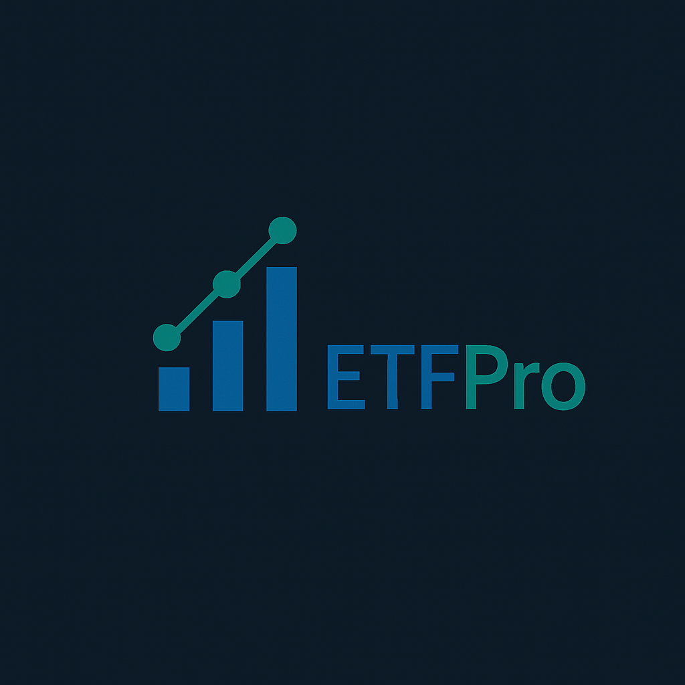
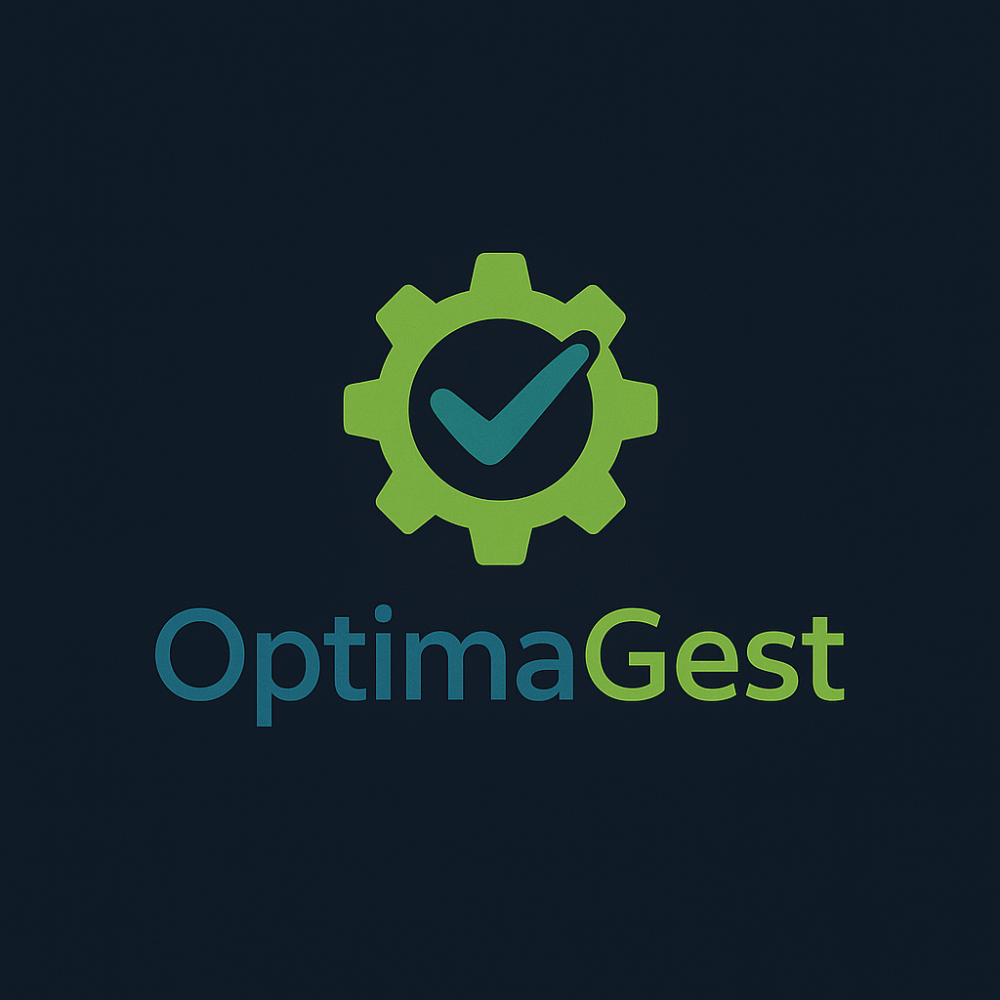

Proyectos

Rush Hour
Juego lógico en Java basado en el clásico Rush Hour, con análisis de niveles y sistema de comandos CLI.
Java
Eclipse

ETFPro
Aplicación web para analizar ETFs y gestionar carteras de inversión, integrando APIs financieras y dashboards interactivos.
HTML, CSS, JavaScript
VS Code

OptimaGest
Plataforma de auditoría interna para gestión de riesgos y controles IT basada en COBIT y procesos de negocio.
Python
PyCharm